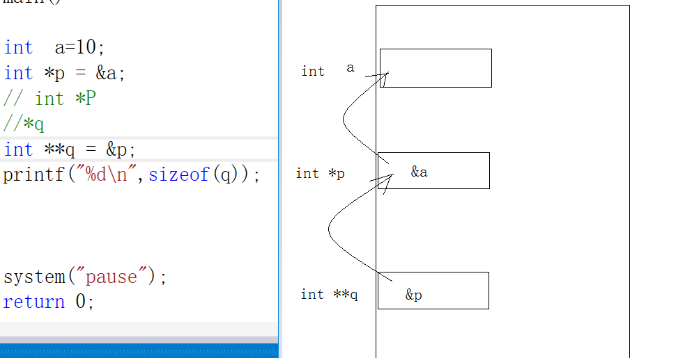

1 多级指针
如果要定义个指针变量用来保存数据的地址,定义的指针类型只要比要保存数据的类型多一级*即可

int main()
{
int a=10;
int *p = &a;
// int *P
//*q
int **q = &p;
printf("%d\n",sizeof(q));
printf("%d\n",**q);
//int **q *k
int ***k = &q;
int ******************g;
int *******************l = &g;
system("pause");
return 0;
}
2 野指针


3 空指针
空指针: 指针初始化为NULL或者复制为NULL
空指针的意义: 作为一个标志
//野指针是暗箭,空指针是明枪. 暗箭难防 明枪易躲

4 万能指针

5 const修饰的指针


6 []不是数组的专属

7 数组和指针

8 指针加减法
int main()
{
int a[10] = {1,2,3,4,5,6,7,8,9,10};
int *stat = a;
int *end = &a[sizeof(a)/sizeof(a[0])-1];//最后一个元素的地址
//两个相同数据类型的指针相减,得到的是中间跨过了多少个元素
printf("%d\n",end - stat);
// printf("%d\n", end + stat);//两指针相加没有意义
system("pause");
return 0;
}
9 指针数组
数组里面的元素是指针
//指针数组
int main()
{
int a = 1;
int b = 2;
int c = 3;
//定义一个数组来存a,b,c的地址
int * num[3] = {&a,&b,&c};//定义了一个数组,数组有3个元素,每个元素int* 类型
int ** p = num;//因为num[0]是int *类型,保存int*类型数据的地址需要再加一个*
//printf("%d\n",**p);//*p取到的是num[0]内容,这个内容是&a,在堆&a加一级*.
//printf("%d\n", **(p+1));
for (int i = 0; i < 3; i++)
{
//printf("%d\n", *(*(p+i)));
//printf("%d\n", *p[i]);//*() == []
printf("%d\n", *num[i]);
}
system("pause");
return 0;
}

10 指针作为函数的参数
要想在另一个函数中改变一个变量的值,必须传这个 变量的地址

11 数组名作为函数的参数
数组如果作为函数的形参,会被退化为指针
//void print_arry(int a[10000]) 数组作为函数的形参,会退化为指针
void print_arry(int *a,int n)
{
int len = sizeof(a) / sizeof(a[0]);
printf("len = %d\n",len );
for (int i = 0; i < n; i++)
{
printf("%d ",a[i]);
}
printf("\n");
}
int main()
{
int a[10] = { 1,2,3,4,5,6,7,8,9,10 };
print_arry(a, sizeof(a) / sizeof(a[0]));
system("pause");
return 0;
}
12 指针作为函数的返回值
下面的返回的指针是有问问题的,需要将fun函数中int c定义再函数之外(全局变量),可以返回全局变量的地址

13 字符指针

14 字符指针作为函数参数
void my_strcat(char *src, char *dst)
{
int n = strlen(src);//n就是src数组中最后一个元素+1的下标
int i = 0;
while (*(dst + i) != 0)
{
*(src + n ) = *(dst + i);
n++;
i++;
}
*(src + n) = 0;
}
int main()
{
char str1[128] = "hello";
char str2[128] = "123abc";
my_strcat(str1,str2);
printf("%s\n",str1);
system("pause");
return 0;
}